Approved composition versus retained player renders Retained baseline evidence, not new current-head acceptance. Open images for native resolution. Campaign history depicts waiting/maintenance; it cannot establish active resource correctness.
learn-and-return · phone 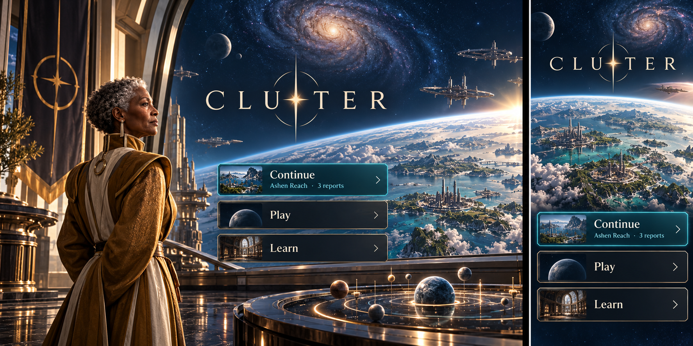
Approved paired concept 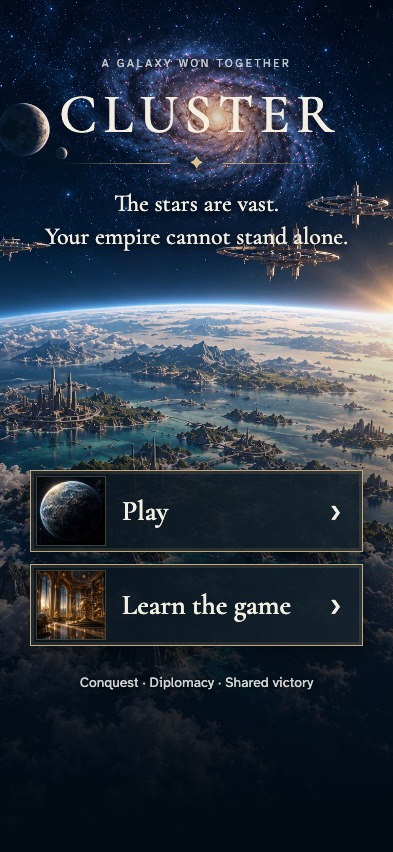
Retained actual player render · phone campaign-history · phone 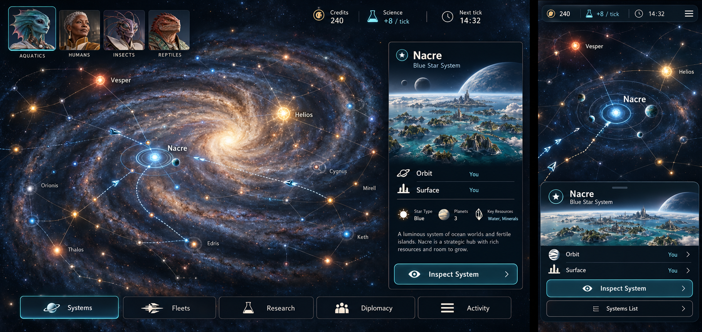
Approved paired concept 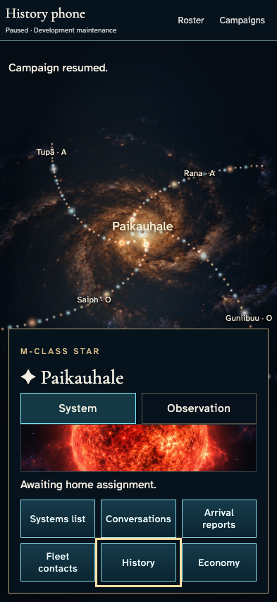
Retained actual player render · phone learn-and-return · desktop Approved paired concept 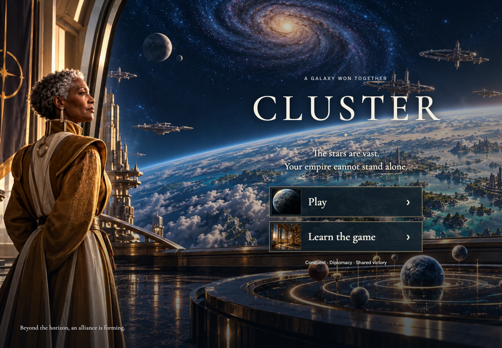
Retained actual player render · desktop campaign-history · desktop Approved paired concept 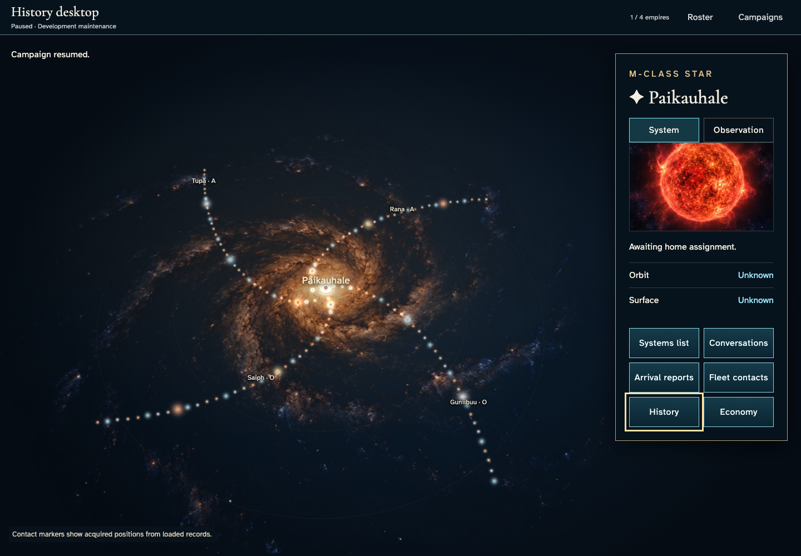
Retained actual player render · desktop learn-and-return · large Approved paired concept 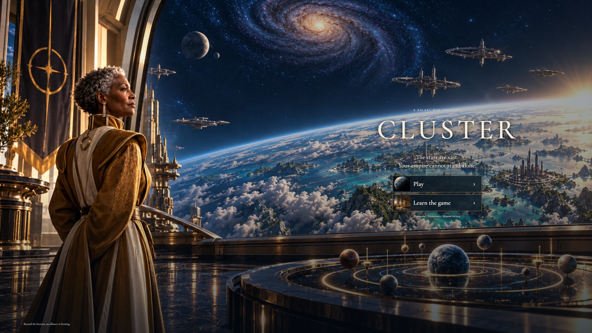
Retained actual player render · large campaign-history · large Approved paired concept 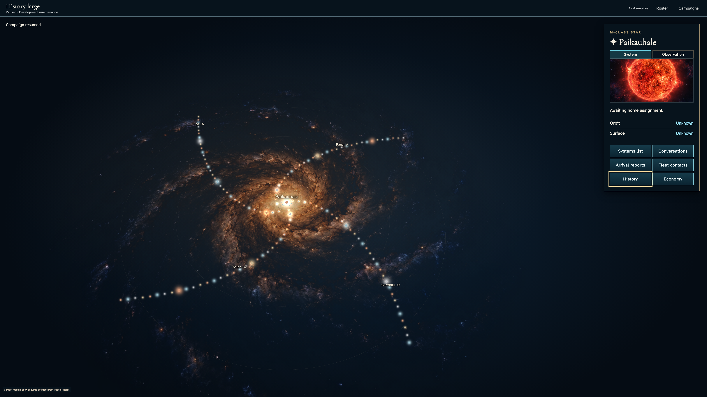
Retained actual player render · large learn-and-return · short Approved paired concept 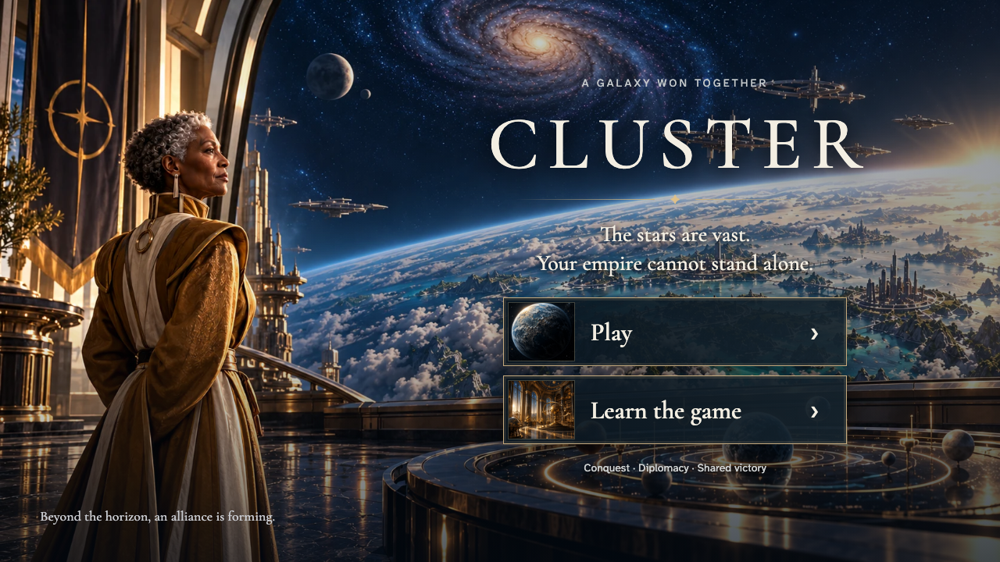
Retained actual player render · short campaign-history · short Approved paired concept 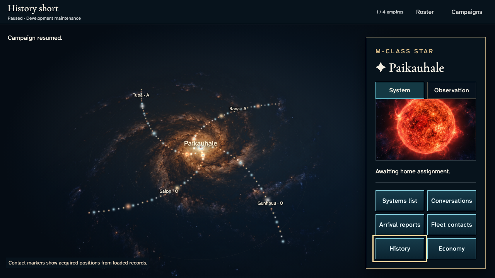
Retained actual player render · short Changed production entry · candidate review Clean4129971, no baseline promotion. Full original generated stories retained separately.
Entry correction · phone Approved concept 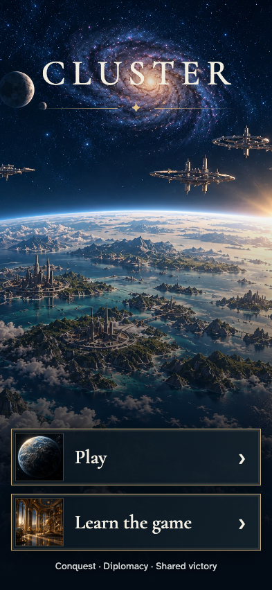
Actual production entry · phone · candidate Entry correction · desktop Approved concept 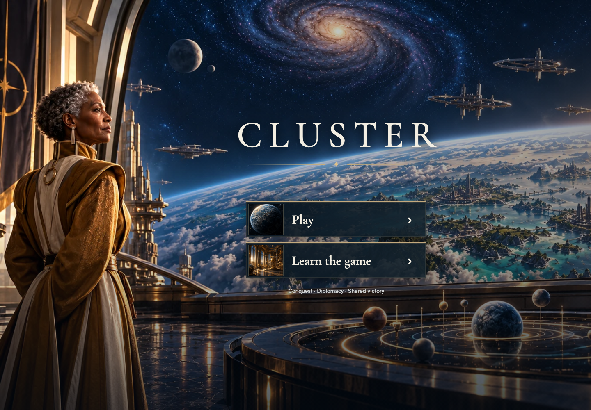
Actual production entry · desktop · candidate Entry correction · large Approved concept 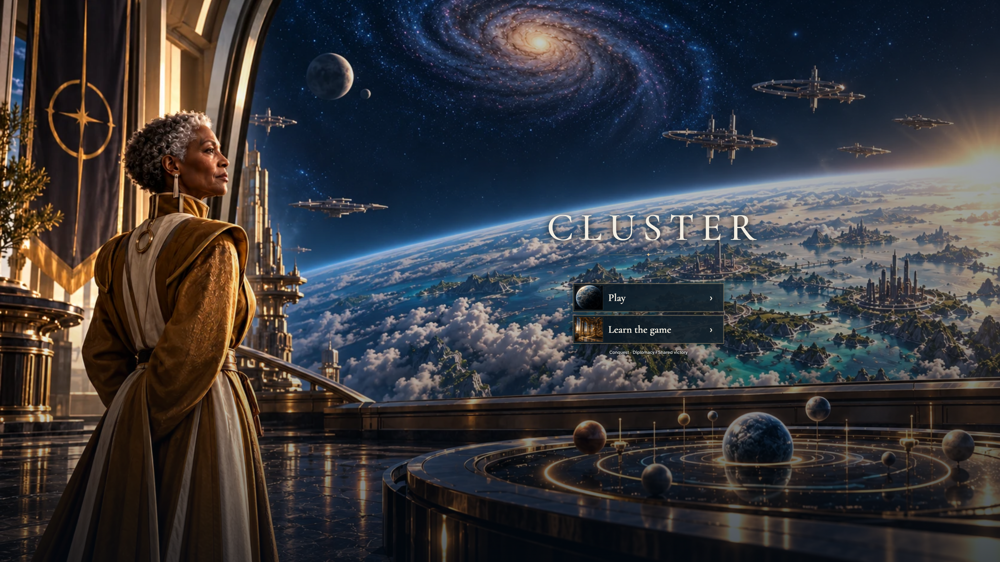
Actual production entry · large · candidate Entry correction · short Approved concept 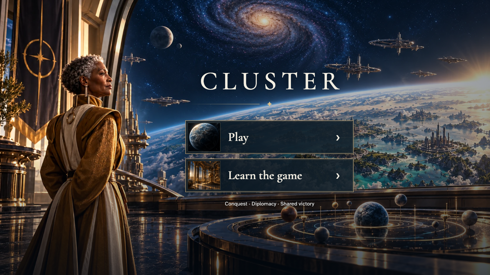
Actual production entry · short · candidate